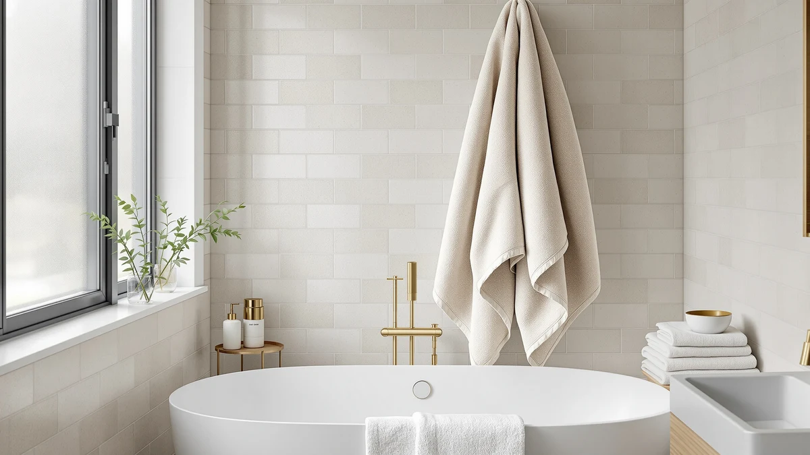

The Best Bath Sheets For sensitive skin (2026)
Prices and picks verified as of August 2026. Independent, reader-supported reviews.


Quick Answer
For sensitive and eczema-prone skin, size matters less than fabric. The gentlest bath sheet is whatever soft, low-lint material touches your skin right after a shower. The TEESHLY Bath Tub and Shower mat is our top pick because its tight cotton-blend weave stays soft and sheds almost no lint, and it's the cheapest way to soften the whole routine.
Our pick: TEESHLY Bath Tub and Shower — $9.99 Check Price on Amazon
Bottom line: our top pick is the TEESHLY Bath Tub and Shower Mats at $10.99. The best budget option is the OTHWAY Bath Tub Shower Mat Non Slip at $11.89.
Things to Know Before You Buy
- Fiber matters more than size. A tight-woven, undyed cotton blend feels gentler against reactive skin than a loosely woven towel twice its size, so don't shop on dimensions alone.
- Lint is a common trigger. Loose fibers cling to damp skin and feel scratchy; low-lint cotton blends and microfiber both shed far less than cheap, short-staple cotton.
- A robe isn't a towel substitute. Robes let skin air-dry instead of rubbing it with a towel, which helps irritation-prone skin, but most people still pat dry first for the water a robe alone won't absorb.
- Wash before first use. New textiles carry manufacturing residue and loose dye that can irritate sensitive skin; one wash with a fragrance-free detergent clears most of it.
- Skip the fabric softener. It coats fibers with a residue that both cuts absorbency and irritates reactive skin over time.
If your skin flares up after a shower, whatever towel, mat, or robe you reach for is often part of the problem. Rough, heavily dyed, or lint-shedding fabrics drag across skin that has already lost some of its protective barrier, and that's enough to turn a routine shower into an itchy afternoon. We widened this guide beyond the strict definition of a "bath sheet" to cover the gentle textiles that actually touch sensitive skin during and after a bath: soft cotton-blend mats, a lightweight robe, an oversized microfiber wrap, and undyed cotton towels.
We compared seven picks with sensitive and eczema-prone skin in mind, weighing fiber softness, lint, and how each one is meant to be used rather than chasing the plushest or priciest option. The TEESHLY Bath Tub and Shower mat ($9.99) is our top pick: its tight cotton-blend weave stays soft wash after wash and sheds little lint, and it's the least expensive way to soften the first step out of the shower.
For a shower mat with more coverage, the OTHWAY Bath Tub Shower Mat ($11.89) is a close runner-up. If you'd rather air-dry than towel off, the Turquaz Lightweight Knee Length Waffle robe ($14.99) and PJGGZ Shawl Collar Bathrobe ($19.99) both use breathable cotton blends, and for classic cotton bath towels, the ZUPERIA White Bath Towels Bulk pack ($59.99) covers a whole household in undyed cotton. Each pick below explains who it's for.
Why You Should Trust Us
I've spent years writing about home and bath products, and skin-friendliness is the detail that gets buried under marketing about thread count and plushness. A mat or towel that looks soft in a product photo can still shed lint, carry heavy dye, or turn stiff after a month of washing, and that's what bothers sensitive skin most. I built this guide to filter for the qualities that matter when your skin reacts.
We earn a commission if you buy through our links, but that doesn't decide what makes this list. Every pick here is something I'd hand to someone with reactive or eczema-prone skin without hesitation.
How We Picked
We started with the priority that overrides everything else for sensitive skin: fiber and finish. We favored tightly woven cotton blends, undyed or lightly colored options, and fine microfiber, and we ruled out loosely woven, heavily dyed items that shed and scratch. We also looked at how each item is actually used, since a robe that lets you air-dry serves a different purpose than a mat you step onto or a towel you rub with.
From there we balanced price, size, and format so the guide covers a full sensitive-skin bathroom routine: a mat for stepping out of the shower, a robe for air-drying, and towels for everyday use. We favored items with consistent, positive ratings over one-off novelties.
How We Compared
We built this guide from reporting, not a lab. We compared the documented construction of each item (fiber, weave, size, and finish) against what owners report after months of washing and using them, reading closely for buyers who mention sensitive skin, eczema, or allergic reactions.
We focused on the failure points that matter most to reactive skin: how much lint an item sheds, whether it stays soft or turns stiff and scratchy after repeated washing, and whether owners report itching or irritation. Where a pick has a real weakness, we name it in its "Flaws but not dealbreakers" section.
Our Picks

TEESHLY Bath Tub and Shower
What we like
- Tight cotton-blend weave feels soft underfoot, not scratchy
- Sheds very little lint, even after repeated washing
- 40-by-16-inch size fits most tub and shower entries
- The lowest price of any pick in this guide
Flaws but not dealbreakers
- A mat only covers the moment you step out, not full drying
- Needs a fragrance-free wash and no softener to stay soft
| Material | Cotton blend |
| Size | 40" x 16" (Rectangular) |
The TEESHLY is our top pick because it solves the first, most overlooked trigger for sensitive skin: what your bare, damp feet land on right out of the shower. Its cotton-blend weave is tight enough that it doesn't shed the loose fibers that cling to skin and itch, and at 40 by 16 inches it covers a standard tub or shower opening without crowding a small bathroom.
It won't replace a towel or robe. It's a mat, not something you dry your whole body with, but as the cheapest pick here, it's a low-risk way to soften one more surface your skin touches every day. Wash it with a fragrance-free detergent and skip the softener, and it keeps its texture wash after wash.

OTHWAY Bath Tub Shower Mat
What we like
- Soft cotton-blend surface that's gentle on bare feet
- Low-lint weave holds up over repeated washes
- Compact 35-by-16-inch size fits tighter bathrooms
Flaws but not dealbreakers
- Slightly smaller footprint than our top pick
- Like any cotton mat, it needs a gentle wash cycle to stay soft
| Material | Cotton blend |
| Size | 35" x 16" (Rectangular) |
The OTHWAY is our runner-up mat, and the pick to reach for if you want the same gentle, low-lint cotton-blend feel as our top pick in a slightly more compact size. It fits well next to a smaller shower stall or a tub without a wide surround, and it holds up to repeated washing without turning stiff.
The trade-off is coverage: at 35 by 16 inches it's a touch smaller than the TEESHLY, so it suits a snugger bathroom better than a wide-open one. Otherwise it shares the same care routine (fragrance-free detergent, no softener) to keep it soft against sensitive skin.

Turquaz Lightweight Knee Length Waffle
What we like
- Waffle-weave cotton blend is lightweight and breathable
- Lets skin air-dry instead of rubbing it with a towel
- Knee length keeps you covered without overheating
Flaws but not dealbreakers
- Runs Small-Medium, so check sizing before you buy
- Doesn't absorb water the way a towel does, so most people still pat dry first
| Material | Cotton blend |
| Size | Small-Medium |
For skin that reacts badly to towel rubbing, the Turquaz waffle robe is worth adding to the routine. Its lightweight, breathable weave lets moisture evaporate off skin gradually instead of dragging a towel across it, which is gentler for eczema-prone or irritation-prone skin. The knee length is enough coverage for most people without trapping heat the way a full-length robe can.
It's sized Small-Medium, so it runs smaller than a one-size robe. Check the size chart before you order. And because it's built for air-drying rather than soaking up water, most people still pat dry with a towel first and use the robe afterward to finish the job gently.

YHPDYL Super Size Thick Coral
What we like
- 35-by-70-inch size wraps all the way around for full coverage
- Fine microfiber weave sheds almost no lint
- Dries fast, so it doesn't stay damp against skin
- Among the lowest prices in this guide for the size
Flaws but not dealbreakers
- Synthetic fiber feels less breathable than cotton to some
- Needs a fragrance-free wash and no softener to keep its softness
| Material | Microfiber |
| Size | 35*70 Inches |
The YHPDYL is our budget pick for anyone who wants a bath sheet in the more traditional sense: something big enough to wrap around your whole body. At 35 by 70 inches it's the largest single piece of fabric in this guide, and its fine microfiber weave sheds close to no lint, which keeps loose fibers off damp, reactive skin.
Microfiber dries faster than cotton, so it doesn't sit damp against skin the way a heavier towel can, but it also feels slicker and less breathable than natural fiber to some people. Wash it with a fragrance-free detergent and skip the softener, which coats the fibers and cuts their softness over time.

PJGGZ Women's Shawl Collar Bathrobe
What we like
- Soft cotton-blend interior with a shawl collar for extra coverage
- Full-length design suits air-drying sensitive skin
- Comfortable, non-restrictive fit for lounging after a bath
Flaws but not dealbreakers
- Runs Small-Medium, so size up if you're between sizes
- Not a substitute for a towel's absorbency
| Material | Cotton blend |
| Size | Small-Medium |
The PJGGZ robe is our pick for anyone who wants more coverage and a dressier feel than a waffle robe offers. Its shawl collar and cotton-blend interior are soft against reactive skin, and the fuller cut works well for lounging around the house while your skin finishes air-drying.
Like our other robe pick, it's sized Small-Medium, so check the size chart first. And it's built for comfort and gentle air-drying, not for soaking up water the way a towel does, so most people still pat dry before putting it on.

ZUPERIA White Bath Towels Bulk
What we like
- 100% cotton with no heavy dye, one less common irritant
- Sold in bulk, so the whole household can wash and rotate towels often
- Simple white towels are easy to bleach and keep fresh
Flaws but not dealbreakers
- The highest upfront cost of any pick, though it covers multiple towels
- Standard 22-by-44-inch size, smaller than a true oversized bath sheet
| Material | 100% cotton |
| Size | Bath Towel 22"x44" |
The ZUPERIA bulk pack is our pick for outfitting a whole household in simple, undyed cotton. Plain white towels skip the heavy dye that irritates a lot of reactive skin, and 100% cotton stays breathable and gets softer with every wash, unlike a synthetic blend that can turn slick over time.
Buying in bulk means a higher price upfront, but it also means everyone in the house can have a fresh towel more often, which matters if sensitive skin does better with towels that are washed frequently. At 22 by 44 inches these are standard bath towels rather than an oversized sheet, so pair them with our YHPDYL pick if you want one larger wrap too.

ZICOTO Soft Hooded Beach Towel
What we like
- 100% cotton construction, gentle on young, reactive skin
- Hood keeps kids warm and makes it easy to wrap them right after a bath
- Sized for ages 3-6, easy for a child to wear themselves
Flaws but not dealbreakers
- Sized for one age range, so it won't fit as kids grow
- Best paired with a fragrance-free wash for the same reasons as our adult picks
| Material | 100% cotton |
| Size | Medium (3-6 yrs) |
The ZICOTO is our pick for kids with sensitive or eczema-prone skin. Its 100% cotton construction avoids the synthetic finishes that can bother young skin, and the hood makes it simple to wrap a wriggling kid right out of the tub without a lot of rubbing.
It's sized for ages 3 to 6, so it's a towel you'll eventually size up from, but for now it wraps easily and is soft enough for daily use. Wash it the same way as our other cotton picks: fragrance-free detergent, no softener, to keep it gentle wash after wash.
Quick Comparison
| Product | Material | Price | Rating | Best for | Get it |
|---|---|---|---|---|---|
| TEESHLY Bath Tub and Shower | Cotton blend | $9.99 | 4 | Gentle everyday shower mat | View on Amazon → |
| OTHWAY Bath Tub Shower Mat | Cotton blend | $11.89 | 4 | Compact bathrooms | View on Amazon → |
| Turquaz Lightweight Knee Length Waffle | Cotton blend | $14.99 | 4 | Air-drying instead of rubbing dry | View on Amazon → |
| YHPDYL Super Size Thick Coral | Microfiber | $12.99 | 4 | Full-body coverage on a budget | View on Amazon → |
| PJGGZ Women's Shawl Collar Bathrobe | Cotton blend | $19.99 | 4 | Dressier robe with more coverage | View on Amazon → |
| ZUPERIA White Bath Towels Bulk | 100% cotton | $59.99 | 4 | Outfitting the whole household | View on Amazon → |
| ZICOTO Soft Hooded Beach Towel | 100% cotton | $13.99 | 4 | Kids with sensitive skin | View on Amazon → |
What bath fabric is best for sensitive or eczema-prone skin?
Look for 100% cotton or a cotton-rich blend woven tight enough to shed little lint.
Are bathrobes gentler on skin than towels?
A soft cotton robe can be gentler for the minutes after a shower because it lets skin air-dry instead of rubbing it with a towel, which matters if rubbing triggers your irritation.
The Competition
Plenty of bath textiles didn't make the cut, and the reasons are worth knowing because they're the same traps you'll hit shopping for sensitive skin on your own.
Heavily dyed towels and mats. Deep, saturated colors mean more dye left in the fibers, and that's one of the most common irritants for reactive skin. We favored white and lightly colored items throughout this guide for that reason.
Loosely woven bargain cotton. Cheap, short-staple cotton sheds far more lint than the tightly woven blends we picked, and that loose lint is exactly what clings to damp, irritated skin.
Full-length, heavyweight robes. Several robes we looked at were plush but heavy enough to trap heat, which can aggravate skin that's already inflamed. We stuck with lighter, more breathable options instead.
Frequently Asked Questions
What bath fabric is best for sensitive or eczema-prone skin?
Look for 100% cotton or a cotton-rich blend woven tight enough to shed little lint. Undyed or lightly dyed items carry fewer leftover chemicals than deeply colored ones, and a plush, well-finished weave feels smoother against skin that has lost some of its natural barrier.
Are bathrobes gentler on skin than towels?
A soft cotton robe can be gentler for the minutes after a shower because it lets skin air-dry instead of rubbing it with a towel, which matters if rubbing triggers your irritation. The trade-off is that a robe absorbs less water per square inch, so many people still pat dry with a towel first.
How do I keep my bath towels from irritating sensitive skin?
Wash new towels before first use, use a fragrance-free and dye-free detergent, and skip fabric softener, since it coats fibers and leaves residue that irritates reactive skin. Pat rather than rub when drying, and replace towels once they turn stiff or start shedding more than a little lint.